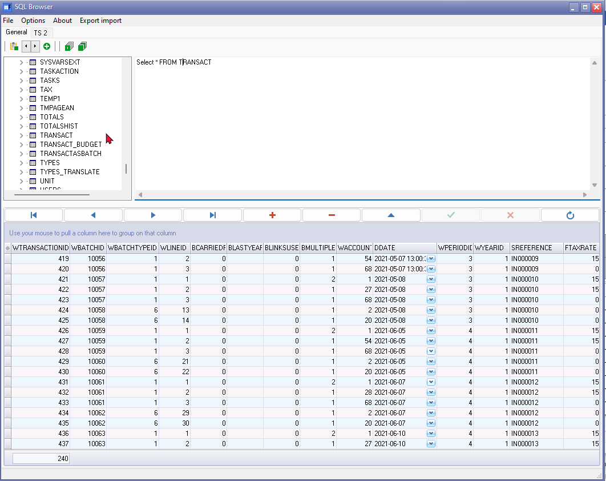
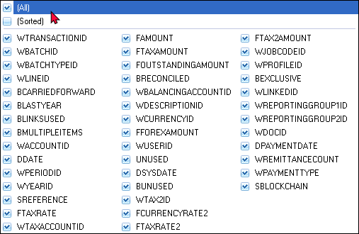
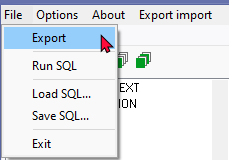
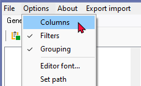
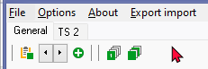
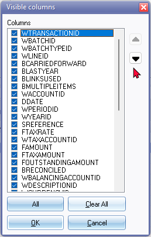
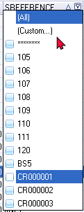
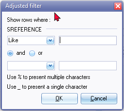
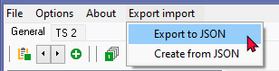

SQL Browser plugin
|
|
SQL Browser - Manual - Shop - Licence : Once-off - This program is licenced under a commercial licence. A nag screen will be displayed when this plugin is launched and will pop up with regular intervals. |

|
|
SQL Browser is used to add cost and project groups and paper types after creating a new blank Set of Books from scratch: |
Introduction to the SQL Browser
The SQL Browser plugin in osFinancials provides users with a powerful tool to interact with their data using Structured Query Language (SQL). This feature is especially beneficial for users familiar with SQL and enables them to run custom queries, group, filter, and sort results effortlessly. Additionally, users can export data to "JASON"- files for further analysis or documentation purposes.
Compatibility with Database Types
The SQL Browser plugin is designed to seamlessly integrate with any Set of Books utilizing either Firebird or MSSQL database types. Whether your organization relies on Firebird or MSSQL for database management, the SQL Browser provides a unified platform for accessing and manipulating data.
This flexibility allows users to leverage the SQL Browser's powerful features across different database environments, ensuring consistent functionality and ease of use regardless of the underlying database technology.
Overview : Step-by-step guide on how to use the SQL Browser in osFinancials:
- Accessing SQL Browser:
- Navigate to the Setup ribbon and click on Plug-ins → Tools → SQLBrowser.
- Selecting a Table:
- Once in the SQL Browser, a list of tables in the active Set of Books will be displayed.
- Select a table from the list.
- Viewing Table Data:
- Right-click on the selected table and choose the "Open" option. This action loads the data from the table into the bottom half of the SQL Browser screen.
- Working with Data:
- Utilize context menus to perform various actions such as opening, dropping, or emptying tables.
- Use the Script Editor to write or edit SQL scripts.
- Navigate and manipulate records using the Records section.
- Apply filters, groups, and configure columns as needed.
- Exporting Data:
- Export data to XML, HTML, Excel, or Text formats (File menu).
- Export data to JSON files Create tables from JSON files (Export import menu).
- Save SQL queries for future use.
- Exiting SQL Browser:
- To exit the SQL Browser, click on the File → Exit menu or close the window.
Additionally, the SQL Browser menu system provides options for managing queries efficiently, customizing font settings, and handling records effectively. Users can write SQL scripts to filter and search data based on various criteria such as date, reference number, document number, or amount.
Furthermore, users can customize the display of columns, sort data in ascending or descending order, and apply filters to refine search results. Options for custom filtering allow users to specify conditions such as equal to, not equal to, less than, greater than, like, and more.
Overall, the SQL Browser in osFinancials empowers users to interact with their data in a flexible and efficient manner, making it a valuable tool for both novice and expert users alike.
|
|
Backup Recommendation Before utilizing advanced features within the SQL Browser, such as dropping tables, executing or running scripts, creating a new table from a "JSON"-file, or any other advanced options, it is highly recommended to create a backup copy of your Set of Books. This precautionary measure helps safeguard against accidental data loss or unintended modifications. |

If you are more than expert than the average user and you know how to write SQL (Structured Query Language) then you will love the SQL Browser. Make any valid SQL query and run it.
The return or result of your SQL rows can be grouped, filtered and sorted with just a few mouse clicks. This SQL browser also allows drag and drop features, which make it easy to work with.
Anything can be exported to the XML (Extensible Mark-up Language), HTML (Hypertext Mark-up Language), Microsoft Excel, or Text File formats. This powerful tool will empower you to produce your own custom view of your data in TurboCASH and osFinancials.
Anything can be exported to JSON-file format. This powerful tool will empower you to produce your own custom view of your data in osFinancials and TurboCASH.
Even if you are not an expert in the details or file structure of osFinancials, you can also use this SQL Browser to filter and sort to see what you need to see. You may also use the SQL Browser to filter, sort and analyse your data.
This option allows you to generate queries and connect to the Database of a selected Set of Books using the Structured Query Language (SQL) standard. This Browse will list all the Firebird Database Files (*.fdb File extension) for the Set of Books.
Using the SQLBrowser
To use this option, you need to open a Set of Books. The SQL Browser will list all the tables in the database of the active (opened) Set of Books.
To Access and Use the SQLBrowser:
- On the Setup ribbon, click on the Plug-ins → Tools → SQLBrowser. The "SQL Browser" screen will list all the tables of the active Set of Books.
|
|
If the SQL Browser is not available from the Plug-ins → Tools → SQLBrowser menu, you need to Activate the SQL Browser plugin. To do this go to the Tools → Activate plugins on the Setup ribbon. |

- Select a table from the list.
- Right-click on the selected table and select the Open option from the context menu. The data for the selected table will be loaded in the bottom half of the "SQL Browser" screen. In this documentation, the “TRANSACT” table is opened. The transactions will be displayed as follows:

|
|
You may click on the > icon on the list to expand and view the list of columns on the selected table (e.g. TRANSACT as in this example). |

|
|
* Click here to show/hide/move columns Click on the asterisk of the column headings to view a list of the column names.  If you tick "(Sorted)" option, the columns on this list will listed alphabetically in the ascending sequence. |
- You may use the context menu's on each of the sections to work with your data, if necessary:
- Tables – Open, Drop or Empty a selected table. You may also extract data (i.e. all Table names or the entire table including the properties (i.e. datatype and width) in the wiki format to the Script Editor all the Table names in a Set of Books. This can be copied and used in documentation and for development.
- Script Editor – You may write or edit SQL script in this section. If the entire table or a selected record is exported as SQL script in the Records section, it will also be displayed in this section. You may also configure the editor font.
- Records – This is the records in a table. For example, each line in a posted batch will shows a record in the TRANSACT (Transaction) table. In this section, you may configure columns, filters, groups to view the data in a table. You may also export the entire table or a selected record as SQL script to the SQL Editor.
- Once you are done, you may Export, Save SQL and Load SQL.
- To exit the SQLBrowser, click on the File → Exit menu; or click on the Close button on the titlebar.
SQL Browser Menu System
File menu

Options menu

Speedbar

The buttons on the speedbar, is as follows:
- Run SQL
- Browse older executed SQL (previous)
- Browse older executed SQL (next)
- Insert a new tab (i.e. TS2, TS3, etc.)
- Run script
- Run script set term
SQL Script Editor
Writing SQL Script
- On the top half of the SQL Browser screen, the following SQL script is displayed:
Select * FROM followed by the name of the selected (active / opened) table. In this example,
Select * FROM TRANSACT represents the TRANSACT (Transaction) table.
- After the name of the table, leave a space, type where and leave a space and type the name of the column, (e.g. to list only those transactions for a specific date, type DDATE).
- Leave a space and type an Operator symbol (e.g. to list all transactions equal to the value that needs to be entered, type =)
- Leave a space and type a valid value (e.g. for the date, type '2021/03/16') This value must start and end with an apostrophe.
- Click on the Run icon (or press the Enter key on your keyboard) to run the script.
Here is an example SQL script to select the date from the Transaction table ("TRANSACT"):
sql
|
SELECT * FROM TRANSACT WHERE DDATE = '2021/03/16'; |
In this example:
- SELECT * retrieves all columns from the table TRANSACT.
- FROM TRANSACT specifies the table named TRANSACT from which to retrieve the data.
- WHERE DDATE = '2021/03/16' filters the results to only include rows where the value in the column DDATE is equal to '2021/03/16'.
You can replace '2021/03/16' with any valid value depending on your data. Remember to follow the formatting conventions, such as surrounding date values with apostrophes.
Similarly you can replace DDATE column name with any valid column name, for example "SREFERENCE" to specify a reference number in journals, or a document number.
5. When finished writing your SQL script, click on the Run icon (or press the Enter key on your keyboard) to run the script.
Font Editor
You may also customise the font in which the query data is to be displayed on the SQL Script Editor.
To Edit the Font:
- Right-click on the "SQL Script Editor" section of this screen and select the Editor Font … option. Alternatively, click on the Options → Editor Font menu.
- Change the font, font style, size, effects and colour as necessary.
- Click on the OK button. The text in the "SQL Script Editor" will be displayed in the selected font settings.
Tables - Records
The data for the selected table will be loaded in the bottom half of the SQL Browser screen.
Data records context menu
If you right-click on the records (table data) the following context menu is displayed:
|
|
Columns - Configure (Show / hide) columns / change sequence of columns. Filters - This will add a filter icon to hide or show the data and filter data. Grouping - Apply grouping to the data. Export as SQL insert - This will run and export the entire selected table to SQL script. Export record as SQL insert - This will run and export the selected record(s) to SQL script. Extract update or insert on field1- This will extract the update or insert SQL script. |

Buttons to manage records
The following buttons may be used to navigate and manage the records:
- First - Go to the first record.
- Previous - Go to the previous record.
- Next - Go to the next record.
- Last - Go to the last record.
 - Add - Add a new record.
- Add - Add a new record.
- Delete - Delete a record. Once you click on this button, a confirmation message is displayed:
Delete record?
|
|
Make absolutely sure that the correct record before you click on the OK button. If it is not the correct record, click on the No button and select the correct record. |

- Action - This will activate the Save or Delete buttons.
 - Save - Save the changes to the record.
- Save - Save the changes to the record.
- Cancel - Cancel changes to the record.
- Undo - Undo the latest changes.
Show / hide Columns
The SQLBrowser displays all the columns for the selected table by default. You may filter (hide) or show only those columns you need to see.
To configure columns:
- The SQL Browser displays all the columns for the selected table by default. Should you wish to hide any of these columns, you may click on the Options → Columns menu of the SQL Browser.
- Select the following options, if necessary:
- Show / Hide Columns – You may de-select (remove the tick) the columns which you do not wish to view by simply removing the tick from the selected column.
- Sequence – Should you wish to change the sequence in which the columns are displayed, you may click on Down or Up buttons.
|
|
You may click on the All button to select all columns. To clear all remove all the columns, click on the Clear button. You may then select (place a tick) only in those columns to be displayed in the SQL Browser. To select (tick) or de-select (remove the tick), you may use the Spacebar and use the Down and or Up keys to select a column. |
- Once your selection is finished click on the OK button to apply these changes to the data in the SQL Browser.
|
|
Move Columns using the mouse: You may also click on a column and drag it to the right (or to the left) to change the sequence in which you prefer the columns to be displayed. Remove Columns using the mouse: If you wish to delete or remove a column, simply click on the column and drag it down and leave the mouse button. |
Sequence of Data in Rows
All the data is by default displayed ascending; from the smallest to the highest value (e.g. a-z or 0-9) according to the record number or record ID (e.g. Accounts.DB table it would be the AccountID, in the TRANSACT table, it would be the TRANSACTIONID, etc.)
To change the sort order from ascending (e.g. a-z or 0-9) to descending (e.g. z-a or 9-0) select a column and click on it. If you click on it again it will change back to ascending sequence.
Filter Options in Column Headings
While viewing and analysing the data you may sort and filter the data, in each column of the active or loaded table. To do this, select the column and click on the drop-down arrow. A list displaying the data as well as an All option and a customise option in the selected column will be displayed.
For example, the Reference column (i.e. SREFERENCE) of the Transaction table (i.e. TRANSACT) will display as follows:

The filter for this column (as per example) will list all reference numbers as entered in batches (journals) example, the reference for balancing entries (i,e, 8 asterisks ********) Reference column (i.e. SReference) of the Transaction Database table (i.e. TransAct.DB).
Custom Filter
You have the following options to sort or filter the data:
- Select a specific entry from the list - only those entries which match the selection in the table, will be listed, e.g. with the same reference number.
- All - Select to display all the entries in the selected table.
- Custom - This will launch a screen on which you may set further criteria to filter the data.

The type of filter options/conditions available for data manipulation can vary depending on the nature of the data contained within the column. Some common Filter options is as follows:
- Equal to - Lists or displays all values that are exactly the same as the specified value.
- Not equal to - Lists or displays all values that are not exactly the same as the specified value.
- Less than - Lists or displays all values smaller than the specified value.
- Less than or equal to - Lists or displays all values smaller than or equal to the specified value.
- Greater than - Lists or displays all values greater than the specified value.
- Greater than or equal to - Lists or displays all values greater than or equal to the specified value.
- Like - Lists all values in the table similar to the specified value using pattern matching (often with wildcard characters).
- Not like - Lists all values in the table not similar to the specified value using pattern matching.
- Is null - Excludes any rows where the value is missing (NULL), meaning they will not be listed or displayed.
- Is not null - Lists or displays any rows where the value is not missing (NULL).
- Start with - Lists or displays values where the text starts with the specified string.
- End with - Lists or displays values where the text ends with the specified string.
- Include - Lists or displays all values that match any of the specified values. This option is useful when you want to filter for multiple specific values.
- Not include - Lists or displays all values that do not match any of the specified values. This option is useful when you want to exclude specific values from the result set.
These options provide a comprehensive set of conditions for filtering data in columns, allowing for precise control over the displayed dataset.
Adjusting filter options based on the data type ensures that you have access to the most relevant and effective tools for manipulating and analysing your data. This flexibility enhances usability and allows for more efficient data exploration and decision-making.
Date Filter
In date columns, a date picker or date selection screen will be available for ease of selection.
Export data
Export to files
On the File menu, you may select the Export option to export your saved data data to XML, HTML, Excel, or Texts formats.
Once you have sorted and filtered your criteria, you may:
- Export the data in exactly the same sequence as displayed in the bottom half of the "SQLBrowser" screen to any of the following file formats:
- XML - Extensible Mark-up Language
- HTML - HyperText Mark-up Language
- Excel - Microsoft Excel Spreadsheet
- Text - Text file
- Save the SQL in a (*.sql) SQL file format. You may then at any later stage open the saved *.sql file in the SQL Browser.
Export to JSON file / Create from JSON file
A JSON (JavaScript Object Notation) file is a lightweight data interchange format that is easy for humans to read and write and easy for machines to parse and generate. It is often used for transmitting data between a server and a web application as an alternative to XML.
JSON files are commonly used in various applications and scenarios such as web APIs, configuration files, and data storage. They are flexible and easy to work with, making them a popular choice for data interchange.
On the Export import menu, you may export data from a selected table and export it to a "JASON"-file.

You may also Create a new table from a "JASON"-file.

Table names in a Set of Books
All tables in the Set of Books may be extracted form the "Extract all table names" in the context menu (right-click on "Tables") option.
|
ABREVIAT |
|
ACCOUNT |
|
ACCOUNTREF |
|
ADDRESSPERACCOUNT |
|
ASSETMAS |
|
BACKORD |
|
BANK |
|
BAT0T1 |
|
BAT0T2 |
|
BAT0T23 |
|
BAT0T3 |
|
BAT0T4 |
|
BATCON |
|
BATRBT0T4 |
|
BATTYPES |
|
BOM |
|
CONTACTS |
|
COUNTRIES |
|
CREDITOR |
|
CURRENCY |
|
DEBTOR |
|
DNLBANKS |
|
DOCBATCH_0_0 |
|
DOCHEAD |
|
DOCLINE |
|
EMPMAS |
|
EMPSOURCE |
|
EVENTS |
|
EVENTSPECIALDAYS |
|
FLOWTMP |
|
GLOBAL |
|
GROUPS |
|
GROUPSSTATUS |
|
IMP_LINK |
|
IMP_SOURCE |
|
IMP_STOCKACCOUNTS |
|
IMP_TOTALS |
|
JOBPROJECT |
|
KEYSCONT |
|
LABSPECS |
|
LOCATIONS |
|
LOGENTRY |
|
LOGGEDIN |
|
MANUFACD |
|
MANUFACH |
|
MESSAGES |
|
MULTIMEDIA |
|
MULTIMEDIABLOB |
|
OILINKS |
|
OPREPORT |
|
OSF_EDIT_FIELDS |
|
OSF_EDIT_FORM |
|
OSF_SEARCH_FIELDS |
|
PAYCON |
|
PAYTRANS |
|
PERIODS |
|
POSTBATCH_0_0 |
|
PRINTERS |
|
PROFILES |
|
RDB$CHARACTER_SETS |
|
RDB$CHECK_CONSTRAINTS |
|
RDB$COLLATIONS |
|
RDB$DATABASE |
|
RDB$DEPENDENCIES |
|
RDB$EXCEPTIONS |
|
RDB$FIELDS |
|
RDB$FIELD_DIMENSIONS |
|
RDB$FILES |
|
RDB$FILTERS |
|
RDB$FORMATS |
|
RDB$FUNCTIONS |
|
RDB$FUNCTION_ARGUMENTS |
|
RDB$GENERATORS |
|
RDB$INDEX_SEGMENTS |
|
RDB$INDICES |
|
RDB$LOG_FILES |
|
RDB$PAGES |
|
RDB$PROCEDURES |
|
RDB$PROCEDURE_PARAMETERS |
|
RDB$REF_CONSTRAINTS |
|
RDB$RELATIONS |
|
RDB$RELATION_CONSTRAINTS |
|
RDB$RELATION_FIELDS |
|
RDB$ROLES |
|
RDB$SECURITY_CLASSES |
|
RDB$TRANSACTIONS |
|
RDB$TRIGGERS |
|
RDB$TRIGGER_MESSAGES |
|
RDB$TYPES |
|
RDB$USER_PRIVILEGES |
|
RDB$VIEW_RELATIONS |
|
RECON0 |
|
RECONBANK |
|
REPCELLS |
|
REPCOLS |
|
REPHEAD |
|
REPLINE |
|
REPORTOP |
|
REPTBAT |
|
REPTDOCS |
|
RESOURCES |
|
STOCK |
|
STOCKPUB |
|
STOCKTRN |
|
SYSPARAMS |
|
SYSVARS |
|
SYSVARSEXT |
|
TASKACTION |
|
TASKS |
|
TAX |
|
TEMP1 |
|
TMPAGEAN |
|
TOTALS |
|
TRANSACT |
|
TRANSACTASBATCH |
|
TYPES |
|
UNIT |
|
USERS |
|
V_OPENDOCAMOUNT |
|
V_TRANSACTASBATCHWITHTRANSID |
|
V_TRANSACTTAXENTRIES |
|
YEARS |